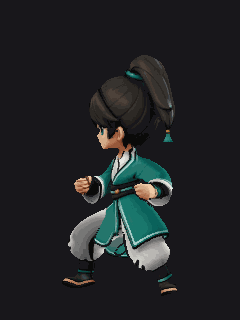
idle 最直帧
atk f1 起手
atk f3 弓步
run 最直帧

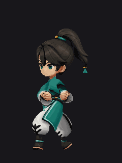
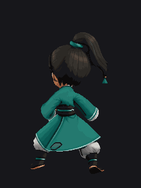
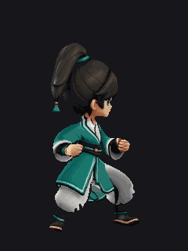
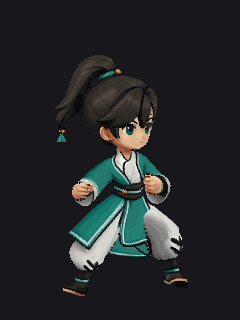
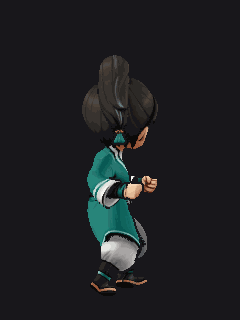
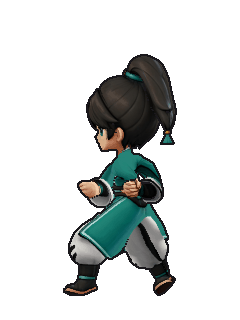
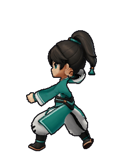
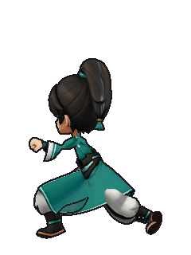
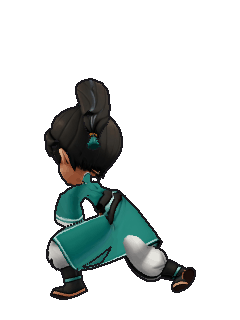
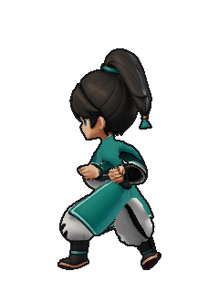
成品目录 assets/_trial_20260912/glb2d_atk/atk_6dir/ · 文件名 atk_{facing}_{1..5}.png · 240×320 RGBA
⚠️ 接入时攻击要从现在的 2 帧改成 5 帧（同 jump 的改法：clipCounts.atk 2→5 + 去掉文件名特例）